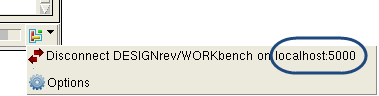

Debugging DRC Results Using Two Layout Design Tools
Calibre RVE for DRC can highlight to two layout design tools, enabling you to debug in one design tool and edit the layout in a different tool. For example, you can debug the DRC results in Calibre DESIGNrev and make the required fix in your place and route tool.
Highlights are made to both layout design tools. However, actions that take place in a selected layout area, such as highlight, waive, fix, and select in area, only take place in the first (primary) connected layout tool.
Prerequisites
A Calibre DRC results database.
Procedure
- Specify
the database path and a “Database Type” of DRC/ERC in the Calibre
RVE dialog box and click Open.
The results database opens in Calibre RVE and the connection to the design tool is made automatically, as indicated by the Connection Icon (
 ) in
the lower right of Calibre RVE. If the connection is not successful, check
the viewer socket, as described in “Manual Connection to a Viewer”.Tip
) in
the lower right of Calibre RVE. If the connection is not successful, check
the viewer socket, as described in “Manual Connection to a Viewer”.TipThe socket number for a connection is reported from the connection icon. 
- In Calibre
RVE, click the connection icon and select
 Options,
or choose from
the main menu.
Options,
or choose from
the main menu. - Enter the
connection information:
- Enter the host name and socket number (from Step 4) for the secondary layout viewer.
- Click
the connect button (
 ) to
start the connection.
) to
start the connection.
If the connection is successful, the design tool information is displayed in the “Tool Information” field.